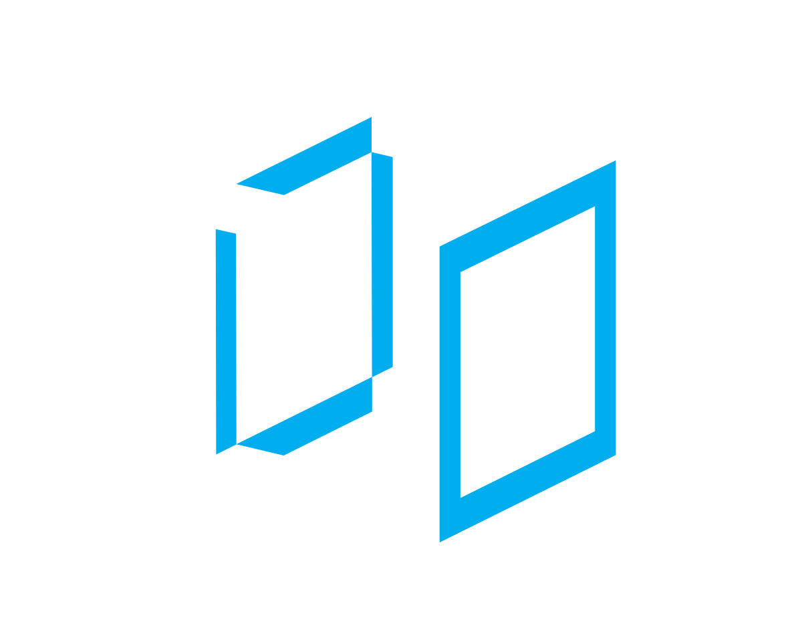
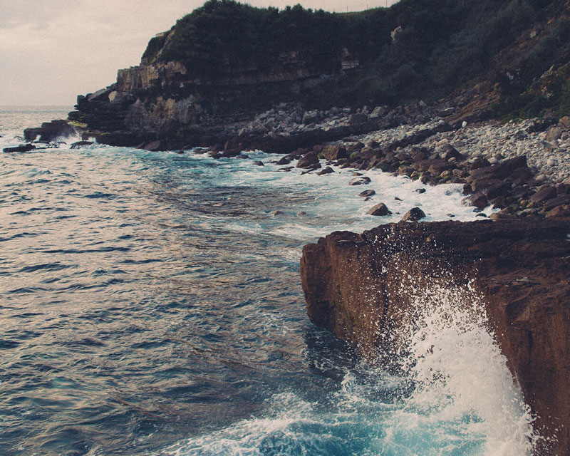
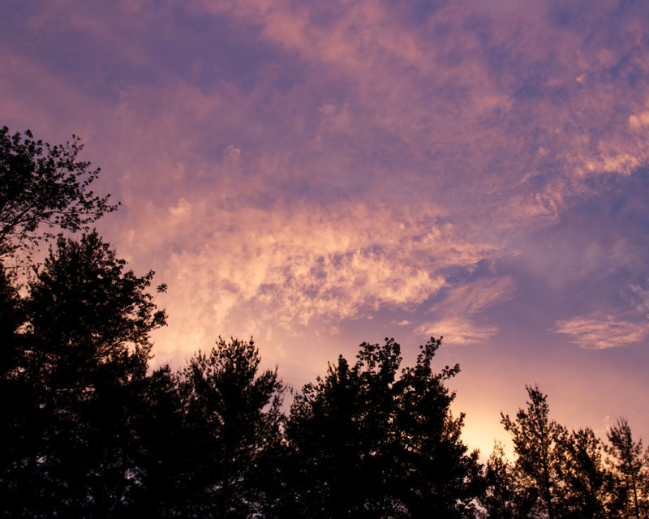
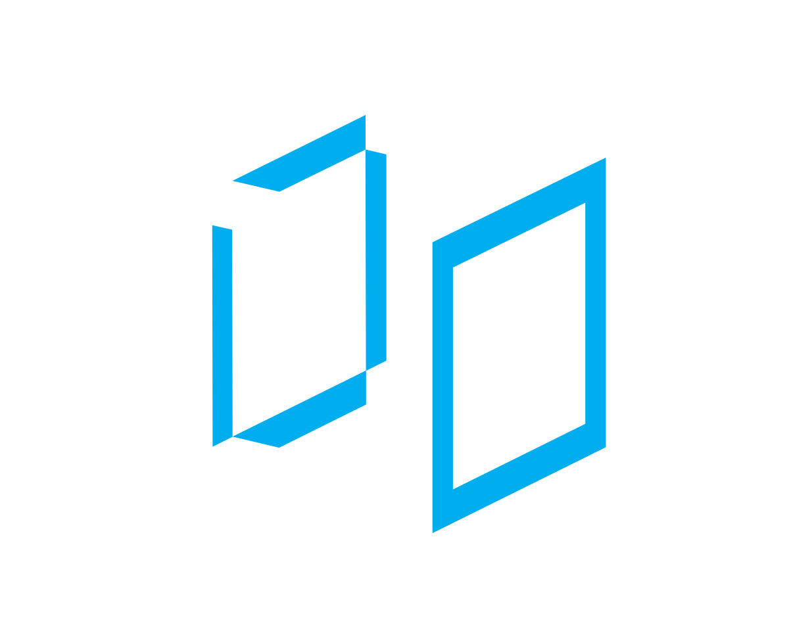
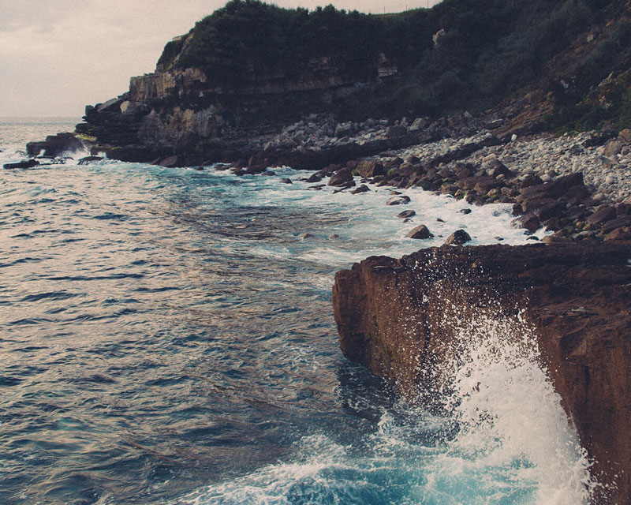
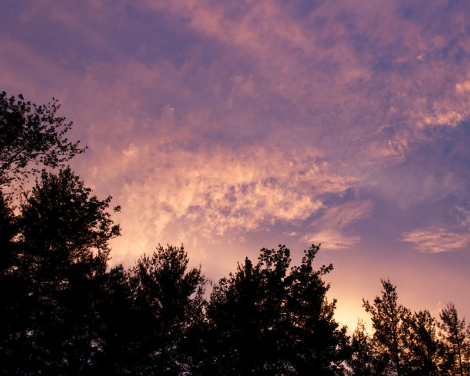

Nature Reveals
Our physical world, respect and explore, Where water meets land; a beautiful shore.
Mountains we conquer, look down in awe, If you're an artist, make sure you draw. Nature exciting, adventurously new, Much more to see, than a sky that is blue. It offers so much, open your eyes, Hope of today, with every sunrise.